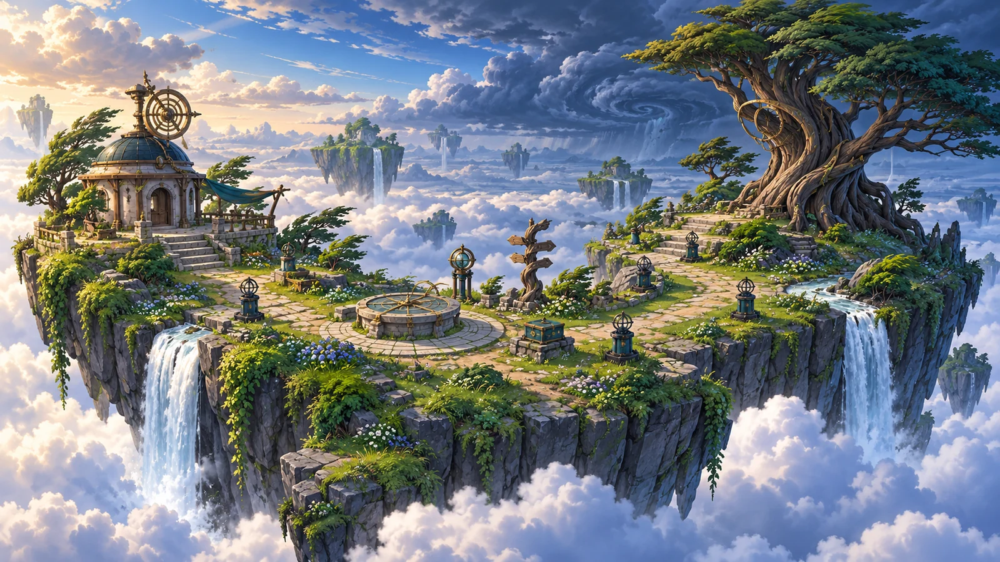
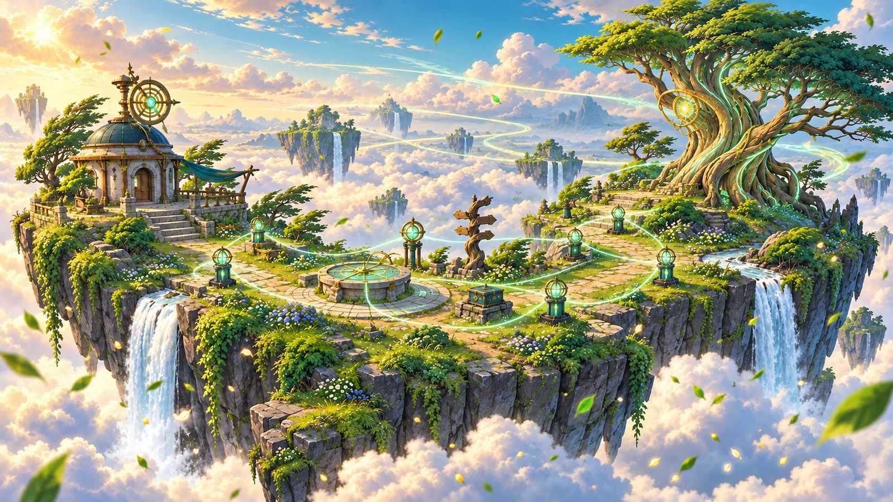
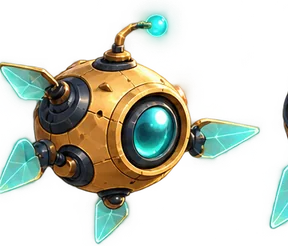

Skip to Gale Garden
← Cloud Harbor
Atlas: The Lost Islands
Island Two · Gale Garden
📜
⚙


Gale Garden and the sleeping Sky Tree
A floating garden island beneath a storm, with wind beacons, waterfalls, an observatory, Spark, and a giant Sky Tree.

Trail signs
Storm gauge
Wind route
Seed pods
Mira's note
Sky Tree
NEXT
Auto-walk
Current objective
Talk to Spark and inspect the trail signs.
×
Translate to Hebrew
Listen
Open Spark's clue
Continue
Gale Garden
×